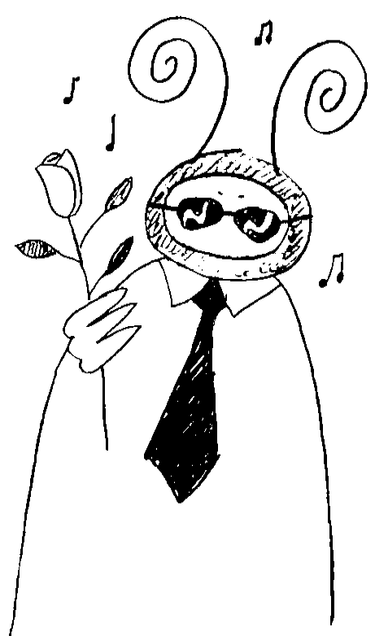

Self-Reliance
This may be by default if you just haven't found the right partner yet, or it may be by choice. A bachelor's life can be fulfilling and interesting provided you don't feel that not being part of a couple is causing you to miss out on enjoying life. With a happy heart and a determination to live life well, leading a bachelor's life can be a pleasant and rewarding option.
Learn to take good care of yourself. Learn about what makes you look good and what makes you feel good. This is a time in which you can form your preferences about your style, your manner of dressing and the way you wear your hair. Indulge in crafting your image the way you want it.
Get your hair cared for by a trusted stylist. Learn what suits you best and build a good rapport with your stylist to achieve your best head of hair every visit.
Practice self-care get enough sleep, food, and rest. Be self-reliant.
Take the time to discover yourself and what makes you tick. From a psychological perspective, you deserve to understand yourself well and to push past the expectations others have of you to discover what you really want in life and who you really are. Determine your purpose in life and think about what you want to achieve in life.
Make plans.
Perhaps write these down
It is important to have goals to strive for that have meaning for you and that match your talents too.
If your purpose includes being part of a couple, when do you see this as a likely possibility?
You may want your bachelorhood to last for a year, five years, a decade or even longer, so think this through when deciding on your future plans.
Whether it's for now or for the long term, whether it's by choice or necessity, seek to accept the circumstances for what they are at this time and plan to make the most of your uncoupled status. Be grateful for the situation you have at this time and the people you know. Realize that this is the right fit at this time in your life, even if this may change some day. Be true to yourself. Listen to your heart and your head together. Don't feel that you have to date or even marry someone just because of social expectations or family pressures. If the bachelor's life is working well for you, then that's your choice for now, and you don't have to conform to other people's expectations.
There will always be someone in your life who thinks they know better than you what you need!
Listen politely but don't be swayed if what they say doesn't ring true for you.
Avoid being defensive about your status as a bachelor.
It comes across as self-righteous and alienating if a person spends a lot of time defending the status quo of their life choices.
If it descends to criticizing the choices others have made, it also comes across as judgmental. Avoid these traps by being happy with your bachelorhood status without insisting that others would benefit from trying it too or putting down people who could be potential partners just because you're feeling jaded. Instead, be a grateful, resourceful and resilient person who likes life just as it is right now, and yet be open to the possibilities the future may bring.
Plan your social calendar according to what works for you.
If you love going out often and attending parties, events and festivals,
then that's your thing.
If you prefer quiet walks in the park or woods and a good read,
then that's your thing.
Don't feel pressured to be what you're not; sometimes assumptions about your single status may result in people demanding that you do things that just don't interest you and that's when you'll need to let them know it's not for you but thanks anyway. Fit in the events and socializing that interest you and leave out the things you don't care for.
Have plenty of friends.
Friendship is definitely an important part of the bachelor's life.
Some friends will be close, while most friends will be people you know from different interactions in work, social and family contexts.
Be friendly and supportive of your friends to ensure that they keep you involved in their lives.
Realize that dating is part of the bachelor's life.
You may be searching for "the one", or you may just want to have casual relationships for the time being. Whatever your motivation, relationships are still very much a part of your potential, if that is what you want. If you don't want to date, now or ever, that's fine too. Just keep an open mind though, as you never know what the future may bring.
